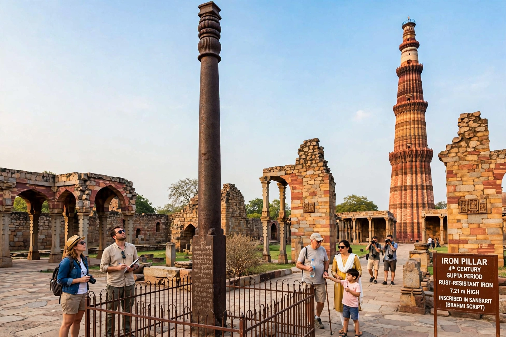

| Iron pillar of Delhi | |
|---|---|
 | |
| Location | Qutb complex, Mehrauli, Delhi, India |
| Height | 7.21 m (23 ft 8 in) above ground |
| Weight | More than 6 tonnes |
| Material | Wrought iron (98% iron) |
| Erected | c. 402 CE (Gupta period) |
| Dedicated to | Vishnu; erected in honour of Chandragupta II |
The Iron pillar of Delhi is a structure 7.21 metres (23 feet 8 inches) high with a diameter of about 41 cm (16 in) that stands in the Qutb complex at Mehrauli in Delhi, India. It is famous for the rust-resistant composition of the metals used in its construction: although made of nearly pure wrought iron more than 1,600 years ago, the pillar has survived with remarkably little corrosion, a fact that has long intrigued both visitors and materials scientists.
The pillar was constructed by Chandragupta II (reigned c. 375–415 CE), the Gupta emperor, as attested by a Sanskrit inscription in Brahmi script on the pillar itself. The inscription records that the pillar was erected as a dhvaja (standard) of the god Vishnu on a hill called Vishnupada, generally identified with Udayagiri near Vidisha in present-day Madhya Pradesh. It was later moved to Delhi, probably in the 10th or 11th century — tradition attributes the move to the Tomara king Anangpal — and was eventually installed in the courtyard of the Quwwat-ul-Islam mosque within the Qutb complex.
The pillar is a single piece of forge-welded wrought iron, tapering gently from base to top, and is crowned by a bell-shaped capital with decorative elements. About 1.1 m of the pillar is buried below ground. Its total original height was approximately 7.8 m. A dent in the pillar is popularly attributed to a cannonball fired on the orders of Nader Shah during his invasion of Delhi in 1739, an impact that cracked part of the surface but did not topple it.
Scientific analyses, including studies by the metallurgist R. Balasubramaniam of IIT Kanpur, have shown that the pillar's resistance to corrosion results from the formation of a thin, protective passive layer of iron hydrogen phosphate hydrate (a compound related to misawite) on its surface. This layer formed because the iron used has a relatively high phosphorus content (about 0.25%) and very low sulphur and manganese, combined with Delhi's relatively dry climate and alternating wet and dry cycles. The slag inclusions in the forge-welded iron also played a role. The pillar is thus a testament to the skill of early Indian iron smiths in producing and working large quantities of high-quality iron.
A popular tradition holds that anyone who can encircle the pillar with their arms while standing with their back to it will have their wish fulfilled; the pillar is now fenced off to protect it from the wear and corrosion caused by visitors' hands. The pillar forms part of the Qutb Minar and its Monuments UNESCO World Heritage Site, inscribed in 1993.
See also: Qutb Minar · Chandragupta II · Gupta Empire · Delhi